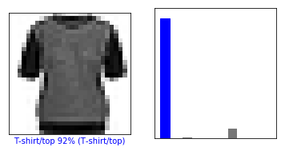
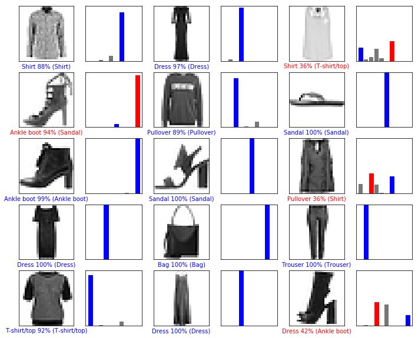
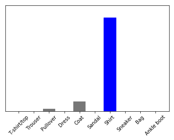

Problem:
Consider you are massive clothing chain and you want to check your inventory and sort through it. How will you go through that massive database? As time and money is important to you, we can apply neural networks to train, predict models to accurately depict items in your database.
TensorFlow is an end-to-end open source platform for machine learning. Tool that allows developers to build and deploy ML powered applications.

Fashion MNIST dataset, which contains 70,000 grayscale images in 10 categories

Building and compiling models: Add layers;A layer extracts a representation from the data fed into it.
Labels as array of integers from 0-9
that corresponding to class of clothing
represented by Image
Plotting displaying first 25 images
- Before the model is ready for training, it needs a few more settings. These are added during the model's compile step:
- Loss function — An algorithm for measuring how far the model's outputs are from the desired output. The goal of training is this measures loss.
- Optimizer —An algorithm for adjusting the inner parameters of the model in order to minimize loss.
- Metrics —Used to monitor the training and testing steps. The following example uses accuracy, the fraction of the images that are correctly classified
Predictions and Results:
Model predicts correct class with almost 90 % confidence level. "Confidence" of the
model that the image corresponds to each of the 10 different articles of clothing.


Model is confident that image matches the class. Correct prediction labels are blue and incorrect prediction labels are red.
Predicting single class from database.
